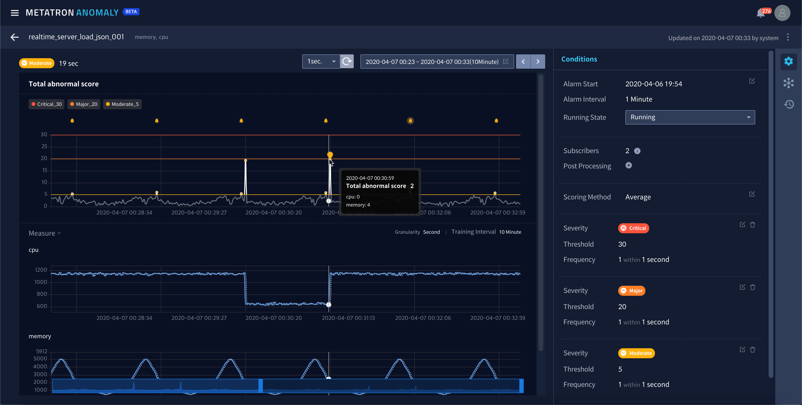
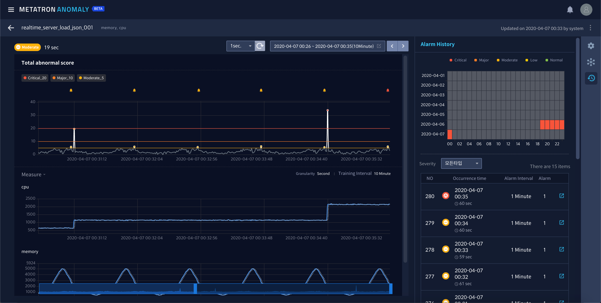

View/edit alarm rule details¶
The Alarm Rule tab menu displays and allows to edit the registered alarm rules. This menu also provides an overview of abnormal scores calculated using the selected prediction models.
The alarm rule menu consists of the following two pages:
Alarm rule list¶
The Alarm Rule tab presents a list of registered alarm rules.

The items displayed in the list are described below, and they can be used to filter or search for rules.
Current Status: Monitoring results according to the rule
Alarm Rule Name: Name of the rule
Data Source: Data source being monitored
Measure: Measure column being monitored
Alarm Interval: Intervals at which alarms are set off
Condition: Number of alarm triggering conditions applied to the rule
Alarm: Number of alarms triggered by the rule
Running: Monitoring status of the rule
Updated: When and who last updated the rule
Alarm rule details¶
Select an alarm rule from the list to view detailed information and edit the settings. The left area of the page visualizes monitoring results, and the right presents settings of the alarm rule conditions.

The top of the monitoring status area displays the monitoring period. Click  to change the period.
to change the period.

The current settings of the alarm rule can be modified under alarm rule condition settings. See Set alarm rule conditions for details.

Click on the right bar to switch the Conditions panel to the Alarm History panel, where a list of alarms triggered to date is displayed (click to revert to the Conditions panel).
